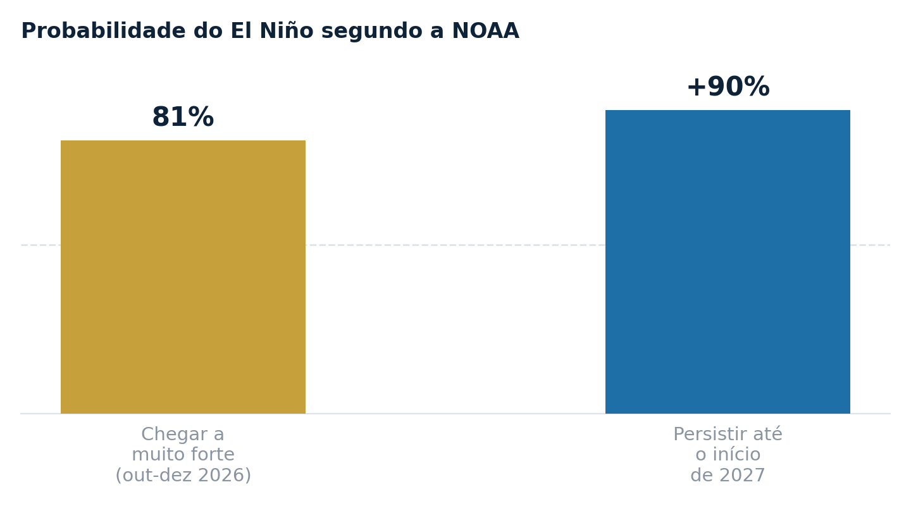
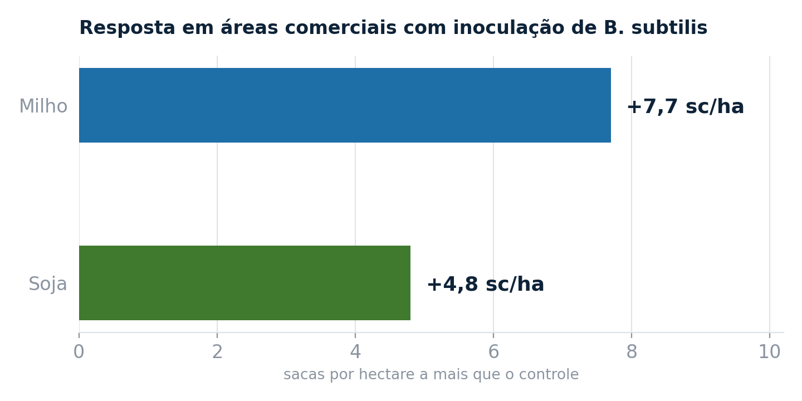
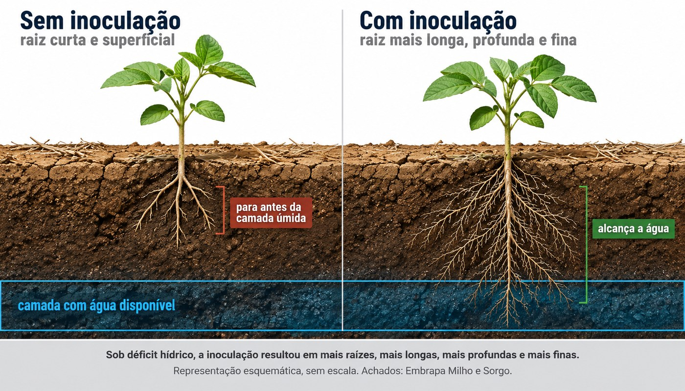

O segundo boletim do Painel El Niño 2026-2027, publicado por INMET, INPE, ANA, Cemaden, Serviço Geológico e Defesa Civil, colocou número no que o produtor do Cerrado já vinha sentindo. As previsões da NOAA indicam 81% de probabilidade de o fenômeno atingir a categoria muito forte no trimestre outubro-dezembro, e mais de 90% de probabilidade de ele permanecer ativo até pelo menos o início de 2027.

Por que este ano pesa mais no Cerrado
O El Niño não distribui o efeito de forma uniforme pelo Brasil. Ele tende a aumentar a chuva no Sul e a reduzir no centro-norte, e é exatamente aí que está a área que interessa a quem trabalha no Cerrado. A previsão sazonal aponta chuva abaixo da normal em boa parte do Centro-Oeste e do Nordeste, com temperatura acima da média em praticamente todo o país.
A combinação é o que preocupa. Não se trata apenas de chover menos, e sim de chover de forma irregular sob temperatura mais alta, o que eleva a demanda hídrica da planta no mesmo período em que a oferta de água fica instável. Na prática, isso significa maior frequência de veranicos na primavera e no início do verão, justamente na janela de estabelecimento da soja e do milho de primeira safra.
A esta altura da safra, cultivar, arranjo de plantio e boa parte do pacote de fertilidade já foram definidos. A janela que continua aberta é a do tratamento de sementes, e é sobre ela que vale conversar agora.
O que a planta faz quando falta água
Sob déficit hídrico, a planta fecha estômatos para perder menos água. O custo dessa defesa é imediato: com estômatos fechados, entra menos gás carbônico, a fotossíntese cai e o enchimento de grãos perde ritmo. Some-se a isso o estresse oxidativo, que danifica membranas e reduz a eficiência do aparato fotossintético.
O que separa uma lavoura que atravessa o veranico de outra que quebra costuma estar embaixo do solo. Raiz mais profunda alcança água que a raiz superficial não acessa, e é essa diferença que define quantos dias a planta aguenta sem chuva.
A rota biológica: bactéria do semiárido
É nesse ponto que entra uma linha de pesquisa da Embrapa Milho e Sorgo iniciada há cerca de oito anos, com uma pergunta direta: se existem microrganismos adaptados a solos que convivem com seca há milênios, o que eles fazem pelas plantas que crescem ali?
A resposta veio de uma estirpe de Bacillus subtilis isolada de solos áridos do Ceará, em área de Caatinga. O sequenciamento do genoma, conduzido na Embrapa, identificou genes associados à promoção de crescimento vegetal, à resposta a estresse oxidativo e osmótico e à produção de compostos voláteis, que são as moléculas pelas quais a bactéria sinaliza para a planta.
Em ensaios de hidroponia com estresse osmótico induzido, a inoculação em sementes de milho aumentou de forma significativa o comprimento das raízes, a atividade fotossintética e o acúmulo de biomassa. Ou seja, o mecanismo não é reter água no solo, e sim mudar a arquitetura da raiz e sustentar a fotossíntese enquanto o estresse dura.
O que os números de campo mostram
Estudos conduzidos em áreas comerciais registraram aumento de até 7,7 sacas por hectare em milho e 4,8 sacas por hectare em soja nas lavouras tratadas, frente ao controle. Por acordo de cooperação técnica, a estirpe foi transferida da Embrapa para a Bioma, empresa do ecossistema COGNY, que desenvolveu a formulação, conduziu os testes de campo em larga escala e detém o registro no Ministério da Agricultura para a cultura da soja. A tecnologia vem sendo avaliada para outras culturas.

Um trabalho anterior da mesma unidade, com irrigação controlada em três níveis, ajuda a entender de onde vem esse ganho. Sob déficit hídrico, a coinoculação de Azospirillum brasilense com Bacillus influenciou o sistema radicular, aumentando o número de raízes e favorecendo raízes mais longas, mais profundas e mais finas. Raiz fina e profunda é o desenho que interessa quando a água disponível está longe da superfície.

Os ganhos citados vêm de áreas comerciais, não de vitrine. Ainda assim, resposta a bioinsumo varia com solo, histórico da área e severidade do estresse. Em ano de veranico curto, o diferencial tende a ser menor; em veranico prolongado, é quando a diferença aparece.
O que fazer com isso na safra 2026/27
Com o plantio da soja se aproximando e um El Niño de intensidade projetada como muito forte, a decisão sobre tratamento de sementes deixa de ser rotina e passa a ser gestão de risco. Inoculante de estresse hídrico não substitui cultivar adaptado, nem corrige compactação que impede a raiz de descer, nem compensa plantio fora de janela.
O encaixe dele é outro: melhorar a chance de a planta atravessar o veranico com o sistema radicular que ela conseguiu construir. É um custo baixo por hectare frente ao valor do que está exposto no talhão, e essa assimetria é o que sustenta a decisão.
Vale ainda um ponto de compatibilidade que costuma travar a adoção: nos ensaios da Embrapa não foi observado antagonismo entre Bacillus e Azospirillum, o que permite compor o pacote sem abrir mão do que já está estabelecido no tratamento.